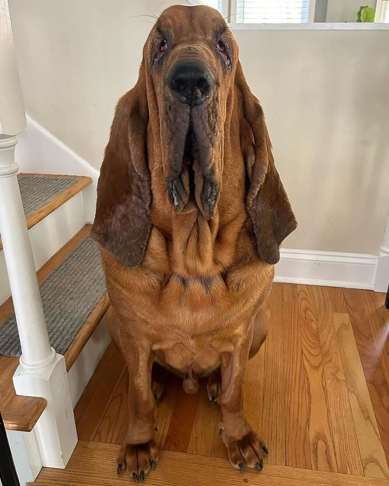
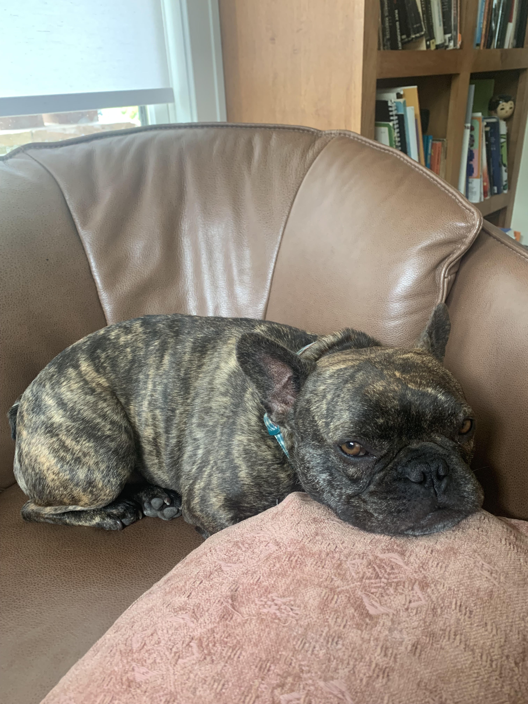

Pets
Bacon Q Dog

Bacon Q. Dog is a 9yr old labradoodle. He prefers to spend his days lounging among the three different beds/couches that his family has gifted him. He enjoys a walk or two around the neighborhood, as long as he can pretend that he doesn't see any of the other animals to avoid the embarrassment of not wanting to admit he has no wolf-like skills in chasing them.
At night just as the rest of the family is ready to relax, Bacon suddenly wants to release all of his energy. He will place his toys on a mini couch and frantically drag the couch around, giving his toys "a ride." There is also a lot of rolling. Lots and lots of rolling.
Bacon's Photo Gallery


Likes
- Belly rubs
- Playing tug-of-war
- Sneaking onto the couch
Walter
Walter is a Brown Bloodhound from Wolfborough, New Hampshire that loves to sit by the fire and go for short walks on Lake Winnipesauke. While he's not a the lake, you can find him in his mom's garden either digging in the mulch or smelling the flowers.
While he doesn't look it, Walter is actually named after Walt Disney, as his parents are very big fans. His personal favorite is the Beast from Beauty and the Beast becasue he feels represented when the beast is on screen!
Likes
- Mulch
- Mailpeople
- Riding in his mom's Kia Soul
Claude
Claude is a French Bulldog born in Bay City, MI and now lives in Northville, MI. He loves to go on walks into town, and is a big fan of laying in the sun! When he's not lying on the patio, you can find him looking for birds or patroling the fence line like a good boy!
Claude also loves to hang out with his brother Q, who is a Britany Spanial. Claude and Q love to play rough, but they always snuggle up together at the end of the day. Finally, while not depicted, he has an ever growing sweater collection to keep him fasionable throughout the year!
Likes
- Steak
- Sweaters
- Playing with his brother Q